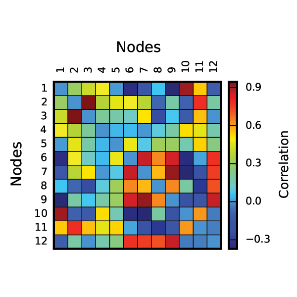
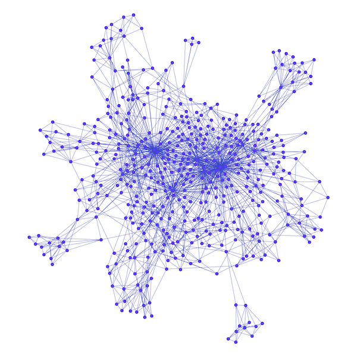
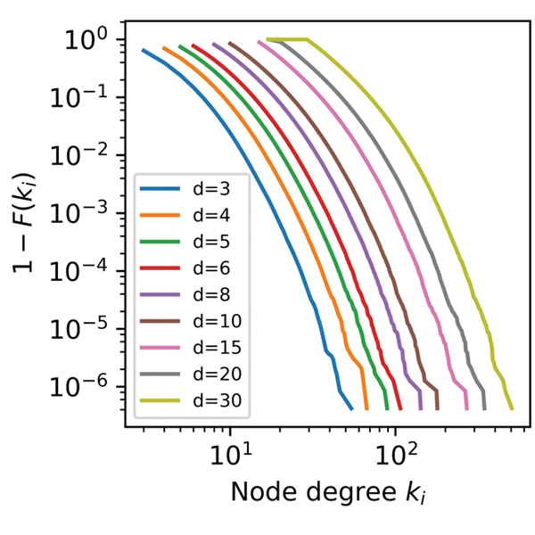
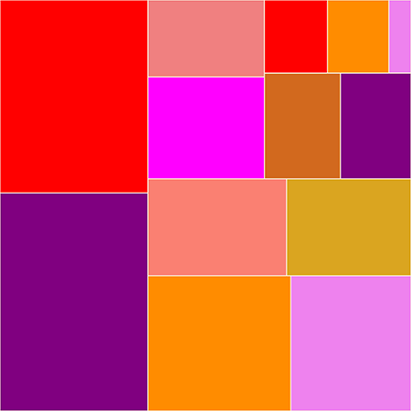
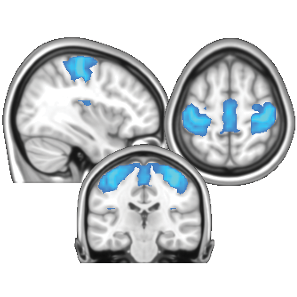

Clinical Associate Professor
Department of Psychology
University of Texas at Austin





News
I have a web site now! [11/17/2017]
At least the front page, for now. Other pages will go online as soon
as I finish them.
A new Python course for Spring 2018 semester [11/9/2017]
A new class titled "Data Analytics with Python" (PSY 394U) is now
officially listed. This course is a sequale to my intro Python class,
and covers various non-traditional data analysis techniques
(machine learning, network analysis, text mining, etc.) using
Python.
Paper published in Brain Connectivity [9/12/2017]
The paper titled "Anti-fragmentation of resting-state fMRI
connectivity networks with node-wise thresholding" has been
accepted for publication in Brain Connectivity.